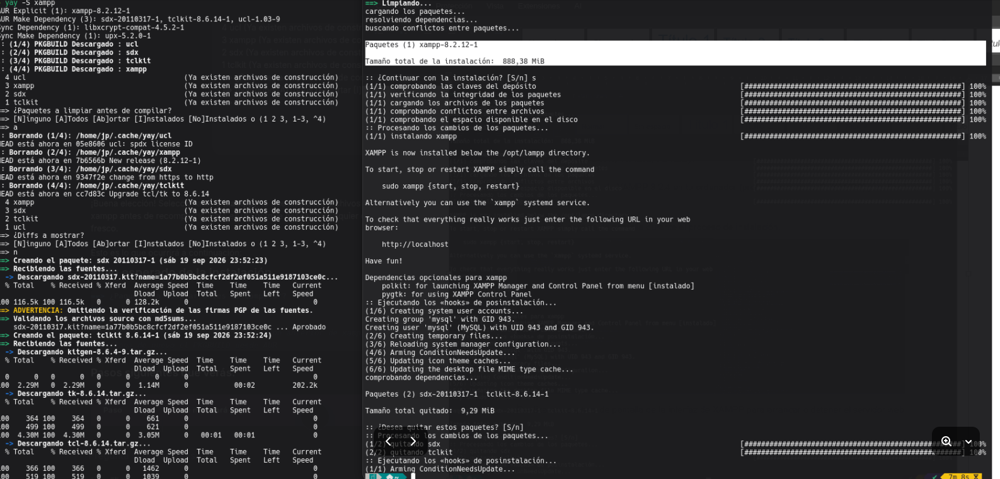
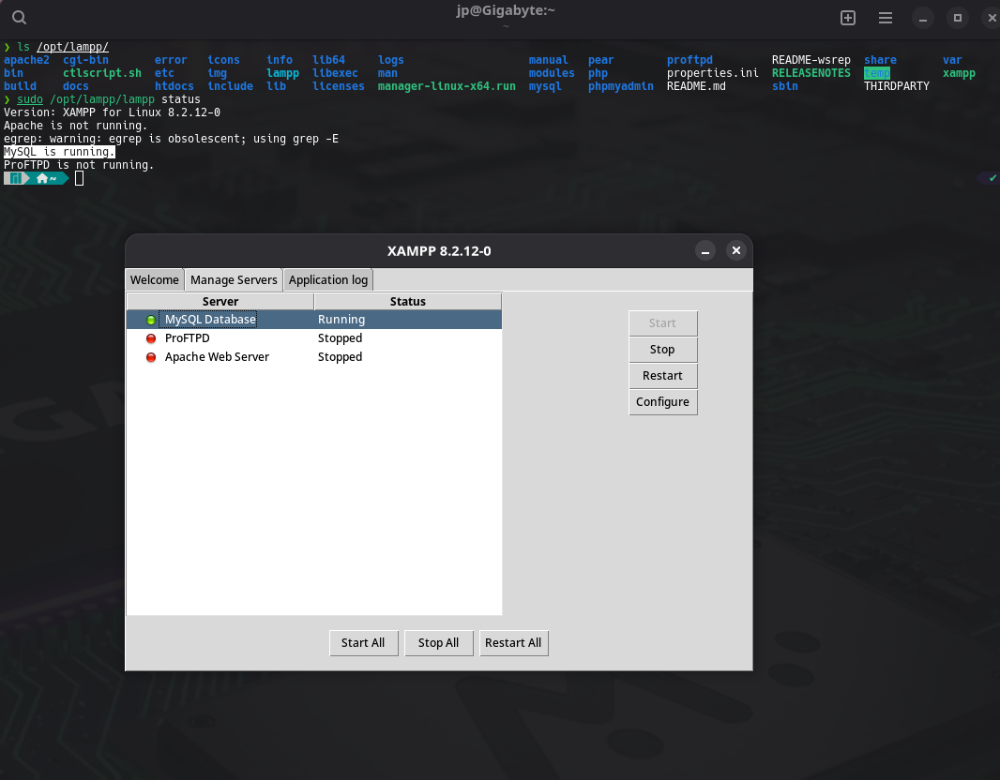
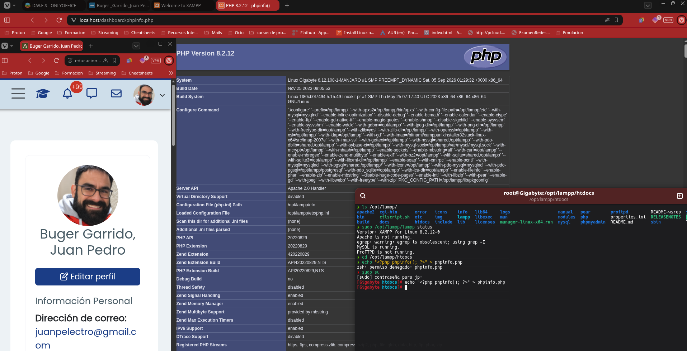
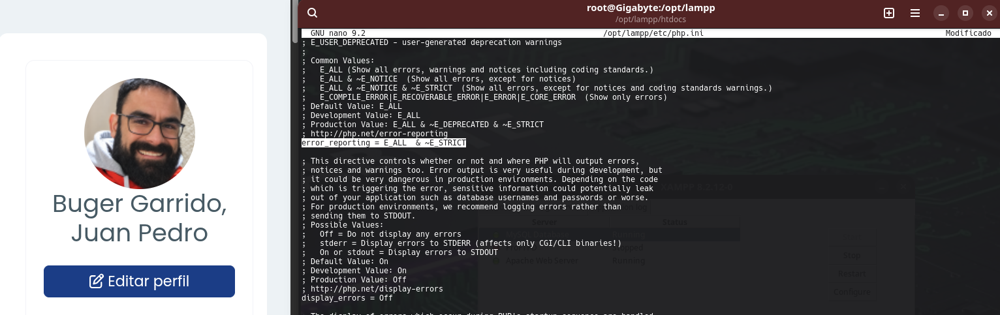

Indicar aquí la respuesta al ejercicio 1.1
a) https://www.w3schools.com
b) Acceder a documentación de diversos lenguajes de programación, entre otros, además de un crear y seguir un itinerario formativo.
c) Me resulta poco atractiva visualmente
d) Existe contenido dinámico, aunque bastante limitado en cantidad
e) 1. A la hora de las respuesta en los cuestionarios, daría un poco mas de feedback, quizás implementando algún agente IA en el backend. 2. Quizás implementar un sistema , de videos interactivos y o colaborativos en el backend
f) Un framework aceleraría el desarrollo y la implementación, ademas de permitir mejor interacción en los hipotéticos equipos de trabajo
El usuario navega por la web de W3Schools y usa el buscador para encontrar el tema que desea aprender, por ejemplo, “XML”. A continuación, hace clic en el resultado mas acorde. 2. El navegador realiza una petición HTTP al servidor web con la solicitud de la página del tutorial. 3. El servidor recibe la petición. Si la solicitud requiere contenido dinámico, la redirige a la aplicación encargada de generar la respuesta. 4. La aplicación del servidor procesa y realiza las operaciones necesarias. Después, genera el código HTML que contiene la información requerida. 5. Una vez que la aplicación termina con la solicitud, envía el HTML generado al servidor web. 6. El servidor web recoge el resultado y lo envía al navegador mediante una respuesta HTTP, incluyendo el código HTML y los recursos necesarios para mostrar la página. 7. El navegador recibe la respuesta, interpreta todos los códigos necesarios (HTML,CSS,etc) y finalmente, muestra al usuario el tutorial solicitado con toda la documentación existente en los repositorios.
| Tecnología | ¿Dónde y como se usaría en el contexto de los ejercicios 1.1 y 1.2? |
|---|---|
| HTTP | Se utiliza para la comunicación entre el navegador y el servidor web cuando se solicitan páginas o recursos |
| HTTPS | Se utiliza para la comunicación segura entre el navegador y el servidor web cuando se solicitan páginas o recursos. |
| HTML | Es el código sobre el cual se estructura las diferentes paginas que muestra el navegador durante todo el proceso. |
| PHP | Es el lenguaje usado en el servidor para procesar los datos del buscador. |
| CSS | Lo usa el navegador sobre la estructura de HTML para dar estilo a la WEB. |
| SQL | El servidor de bases de datos donde se almacena toda la información, lo usa para buscar los datos requeridos, o para modificar la información existente como por ejemplo creación de usuarios nuevos o realizar el seguimiento del progreso del usuario |
| JavaScript | El navegador se sirve de este lenguaje para añadir interoperatividad en la pagina, validar los datos ETC. |
Notas, Mi OS base es una distribución Linux basada en Arch. · He olvidado añadir captura de la plataforma en las anteriores caprturas, los subsanaré en las sucesivas
Captura de pantalla durante el proceso de instalación

Captura de pantalla de la interfaz de XAMPP para arrancar o detener el servidor web

Captura de pantalla de lo que aparece en el navegador al acceder a la URL asociada a dicho script

Captura de pantalla de modificacio la directiva max_execution_time
Captura de pantalla donde se modifica la directiva modificar los errores reportados por el usuario
